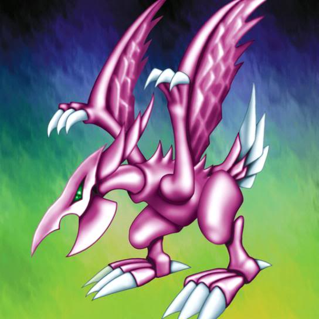

Seiyaryu

Description: "300-point bonus for battles against FIEND monsters."
STATS
ATK: 2500
DEF: 2300DECK COST
Deck Cost per Card: 53EFFECT IS IMPLEMENTED!
Fusion List (11 Possible Fusions)
- Seiyaryu + Bolt Escargot = Twin-Headed Thunder Dragon
- Seiyaryu + Bolt Penguin = Twin-Headed Thunder Dragon
- Seiyaryu + Electric Lizard = Twin-Headed Thunder Dragon
- Seiyaryu + Electric Snake = Twin-Headed Thunder Dragon
- Seiyaryu + Kaminari Attack = Twin-Headed Thunder Dragon
- Seiyaryu + LaLa Li-oon = Twin-Headed Thunder Dragon
- Seiyaryu + Kaminarikozou = Twin-Headed Thunder Dragon
- Seiyaryu + Sanga of the Thunder = Twin-Headed Thunder Dragon
- Seiyaryu + The Immortal of Thunder = Twin-Headed Thunder Dragon
- Seiyaryu + Thunder Dragon = Twin-Headed Thunder Dragon
- Seiyaryu + Tripwire Beast = Twin-Headed Thunder Dragon